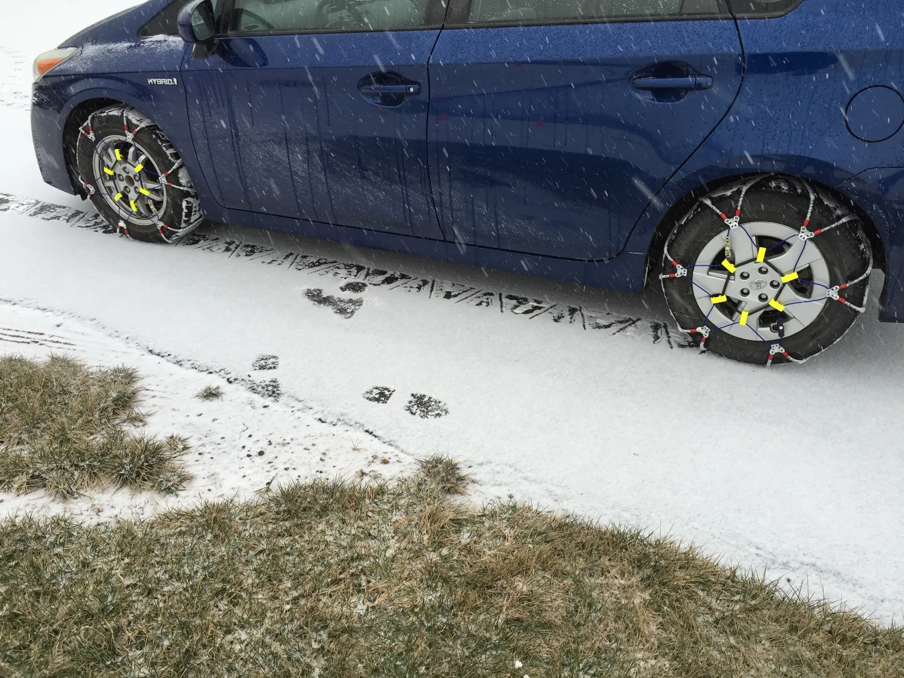
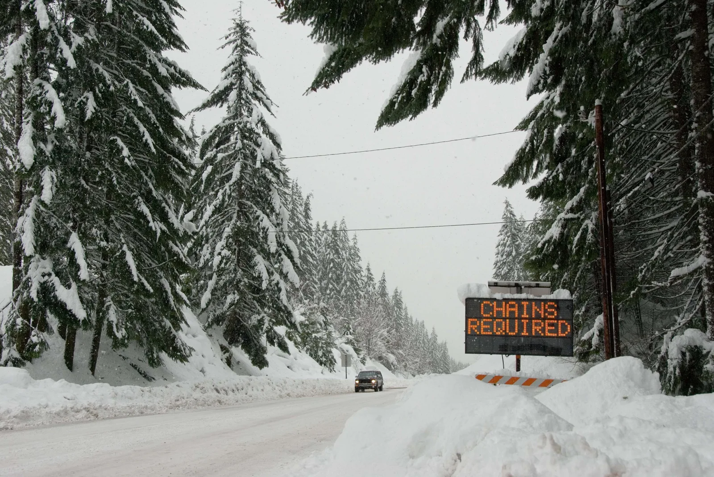
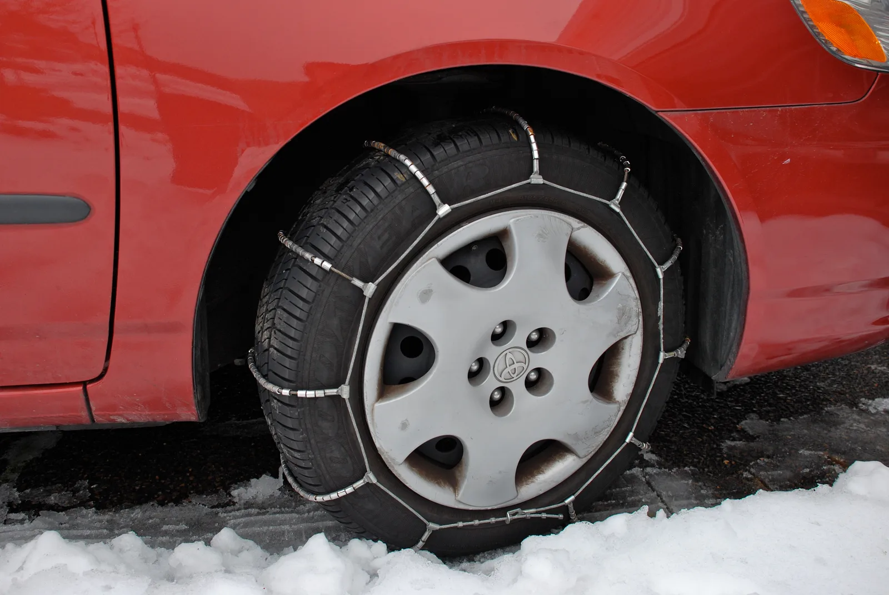
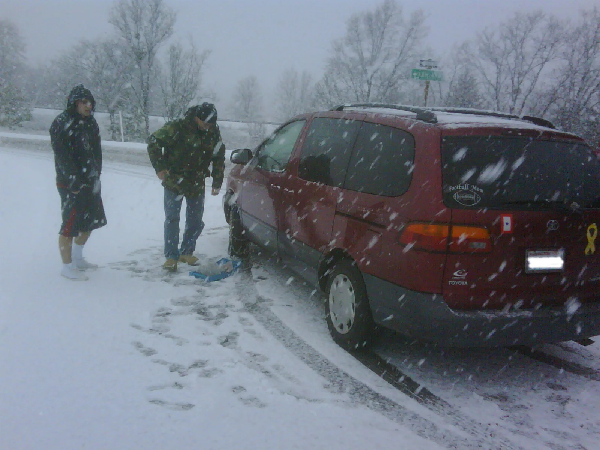

▲ 체인은 미리 챙겨서 눈이 오기 전, 안전한 곳에서 장착해두는 것이 가장 안전하다 ⓒ Wikimedia Commons
내비게이션에 "체인 미착용 시 진입 제한"이라는 안내가 뜨는 순간, 트렁크에 체인이 없다면 그 자리에서 발이 묶인다.
실제로 미국·유럽 산간 고속도로에는 "CHAINS REQUIRED"라는 전광판이 걸리고, 체인 없는 차량은 그 지점에서 우회하거나 대기해야 한다. 국내도 다르지 않다. 대설특보가 내려진 고갯길·산간 구간에서는 체인 등 미끄럼 방지장치가 없으면 통행 자체가 제한될 수 있다.
겨울마다 반복되는 질문 — 언제, 어디서 체인을 의무적으로 채워야 하고, 어떻게 장착해야 하는지 2026년 기준으로 정리했다.
1. 체인 없인 못 지나간다 — 통행제한 구간이란
도로교통법 제6조는 경찰서장·도로관리청이 눈·비 등으로 도로에 위험이 예상될 때 차량 통행을 금지하거나 제한할 수 있도록 정하고 있다. 폭설이 예보되면 이 조항을 근거로 고속도로·국도 일부 구간에 실제로 통행제한이 걸린다.
| 구분 | 기준 |
|---|---|
| 고속도로 | 특정지점 노면 적설량 10cm 이상 또는 시간당 평균 적설량 3cm 이상이 6시간 이상 지속될 때 |
| 일반국도 | 노면 적설량 10cm 이상 등 폭설로 장기간 차량 고립이 예상될 때 |
산간·고갯길처럼 결빙이 잦은 구간은 이 기준에 못 미쳐도 도로관리청 판단으로 체인 등 미끄럼 방지장치 장착을 조건부로 통행을 허용하는 경우가 있다. 해외 산간 고속도로에서 흔히 보이는 "체인 필수(CHAINS REQUIRED)" 전광판이 바로 이런 조치의 대표적인 예다.

▲ 산간·고갯길 구간은 체인 등 미끄럼 방지장치 장착을 조건으로만 통행을 허용하기도 한다 ⓒ Oregon DOT / Wikimedia Commons
📍 체인 미착용, 무조건 과태료는 아니다
통행제한 구간의 원칙은 진입 자체를 차단하거나 우회시키는 것이다. 즉 체인이 없으면 애초에 그 구간에 들어갈 수 없도록 통제하는 방식이 우선이다. 다만 통제를 무시하고 강행 진입하다 사고를 내거나 도로를 막으면 도로교통법상 통행금지·제한 위반 처리로 이어질 수 있으므로, VMS(전광판)·내비게이션 통제 안내는 반드시 따라야 한다.
겨울철 통행제한·통제 구간은 실시간으로 바뀌므로, 장거리 출발 전에는 미리 확인하는 것이 좋다. 한국도로공사 도로교통정보 바로가기
2. 금속이냐 우레탄이냐 — 체인 종류별 비교
시중 체인은 크게 네 종류로 나뉜다. 접지력과 편의성이 서로 반대 방향으로 움직인다는 게 공통점이다.
| 종류 | 장점 | 단점 |
|---|---|---|
| 금속(사슬형) 체인 | 접지력 최고 수준, 내구성 우수, 가격 저렴 | 소음·진동 큼, 장착이 번거로움 |
| 우레탄 체인 | 소음·진동 적음, 가볍고 장착 비교적 쉬움 | 금속형보다 접지력·내구성 낮음 |
| 섬유형(스노삭스) | 장착이 가장 간편, 소음 거의 없음, 보관 용이 | 내구성 낮아 폭설·장거리엔 한계 |
| 스파이더(원터치) 체인 | 휠 어댑터 장착 후엔 탈부착이 매우 빠름 | 최초 어댑터 장착이 번거로움 |

▲ 케이블(우레탄·와이어)형 체인 — 금속 사슬형보다 가볍고 조용하지만 접지력은 다소 낮다 ⓒ Wikimedia Commons
✅ 내 차엔 어떤 체인이 맞을까
· 산간·폭설 지역을 자주 다닌다면 — 접지력이 확실한 금속 체인
· 도심 출퇴근용, 가끔 눈 오는 지역 — 우레탄·섬유형으로 충분한 경우가 많음
· 타이어 규격에 맞는 사이즈인지 구매 전 반드시 확인 — 안 맞으면 장착 자체가 불가능하거나 주행 중 이탈 위험
3. 올바른 장착 방법 — 순서를 지켜야 안전하다
체인은 평평하고 안전한 갓길이나 휴게소에서, 시동을 끄고 장착하는 것이 원칙이다. 주행 중이거나 경사·커브 구간에서 급하게 장착하는 것은 매우 위험하다.
| 단계 | 내용 |
|---|---|
| 1 | 안전한 갓길·휴게소에 정차, 비상등 점등 후 시동 끄기 |
| 2 | 구동륜(앞바퀴 또는 뒷바퀴 — 차종별 확인)에 장착할 체인 펼쳐 방향 확인 |
| 3 | 체인을 타이어 안쪽부터 밀어 넣고 바닥 쪽부터 위로 끌어올려 감싸기 |
| 4 | 클립·텐셔너 등 고정장치로 헐거움 없이 단단히 고정 |
| 5 | 서행으로 20~30m 정도 이동 후 재정차, 느슨해진 부분 다시 조이기 |
📍 구동륜부터 채운다
체인은 원칙적으로 구동력이 전달되는 바퀴에 장착한다. 전륜구동 차량은 앞바퀴, 후륜구동은 뒷바퀴가 기본이다. 4WD·AWD 차량은 차종별 매뉴얼에 따라 앞뒤 모두 장착을 권장하는 경우도 있으므로 취급설명서를 확인하는 것이 정확하다.
4. 장착했다고 끝이 아니다 — 주행 중 지켜야 할 것
체인을 채웠다고 평소처럼 달려도 되는 것은 아니다. 오히려 체인 장착 상태에서의 과속이 사고로 이어지는 경우가 많다.
⚠️ 체인 장착 후 주행 시 주의사항
· 체인 장착 상태에서는 시속 30~50km 이내로 서행 — 제조사·체인별 권장 속도를 넘기면 체인 파손·타이어 손상 위험
· 급가속·급제동·급회전은 절대 금물 — 체인이 있어도 결빙 노면에서는 제동거리가 크게 늘어남
· 제설이 완료된 일반 도로·포장 구간에서 계속 주행하면 체인이 아스팔트를 손상시키고 체인 자체도 빨리 마모됨 — 눈이 없는 구간에 들어서면 휴게소·갓길에서 탈거
· 주행 중 덜컹거리는 소음·진동이 갑자기 커지면 체인이 풀렸다는 신호 — 즉시 안전한 곳에 정차해 점검
법적으로도 눈·결빙 노면에서는 감속이 의무다. 도로교통법 시행규칙 제19조에 따르면 비가 내려 노면이 젖어있거나 눈이 20mm 미만 쌓인 경우 최고속도의 20%를, 폭설·안개로 가시거리 100m 이내이거나 노면이 얼어붙은 경우·눈이 20mm 이상 쌓인 경우 최고속도의 50%를 줄여 운행해야 한다. 체인 장착 여부와 무관하게 적용되는 기본 감속 기준이다.

▲ 체인 없이 폭설 구간에 진입했다가 발이 묶이면 대처가 훨씬 어려워진다 ⓒ Oregon DOT / Wikimedia Commons
5. 트렁크에 항상 넣어둬야 하는 이유
겨울철 산간·지방 도로를 조금이라도 다닌다면, 체인은 예보를 보고 그때 사는 물건이 아니라 미리 트렁크에 넣어두는 물건이다. 갑작스러운 대설특보에 대형마트·카센터를 돌아다녀 봐야 재고가 없는 경우가 흔하다.
✅ 겨울철 트렁크 상시 체크리스트
· 내 차 타이어 규격에 맞는 체인 — 규격 확인 없이 구매하면 무용지물
· 장착용 장갑 — 젖은 손으로 금속 체인을 만지면 매우 차갑고 다치기 쉬움
· 무릎 매트·랜턴 — 야간·노면이 젖은 상태에서 장착할 때 필요
· 여분의 텐셔너·클립 — 장착 중 분실하거나 파손되는 경우가 잦음
📍 사용 후 관리가 다음 겨울을 좌우한다
제설용 염화칼슘 성분은 금속을 빠르게 부식시킨다. 체인을 사용한 뒤에는 흐르는 물로 씻어 염분을 제거하고, 완전히 말린 뒤 보관해야 다음 겨울에도 녹슬지 않고 쓸 수 있다. 젖은 채로 트렁크에 방치하면 금속 체인은 물론 우레탄·섬유 소재도 삭아서 접합부가 끊어질 수 있다.
6. 요약
대설특보 시 도로관리청은 도로교통법 제6조를 근거로 산간·고갯길 등 위험 구간의 통행을 제한하거나, 체인 등 미끄럼 방지장치 장착을 조건으로 통행을 허용할 수 있다. 고속도로는 노면 적설량 10cm 이상(또는 시간당 3cm 이상이 6시간 지속)이면 통행제한 발동 기준에 해당한다.
체인은 금속·우레탄·섬유·스파이더형으로 나뉘며 접지력과 편의성이 상충한다. 장착은 안전한 곳에서 구동륜부터, 장착 후엔 시속 30~50km 이내로 서행해야 하고 눈이 없는 구간에서는 바로 탈거해야 한다.
가장 중요한 것은 준비다. 체인은 눈이 온 뒤가 아니라 겨울이 오기 전에 트렁크에 넣어두고, 사용 후엔 염분을 씻어내고 말려 보관해야 다음 겨울에도 제 역할을 한다.